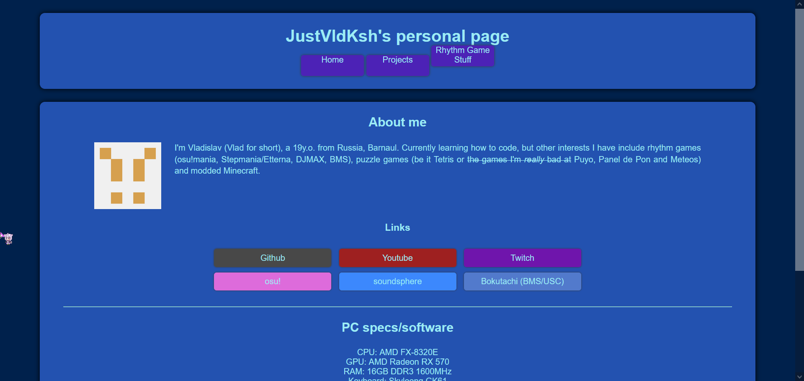
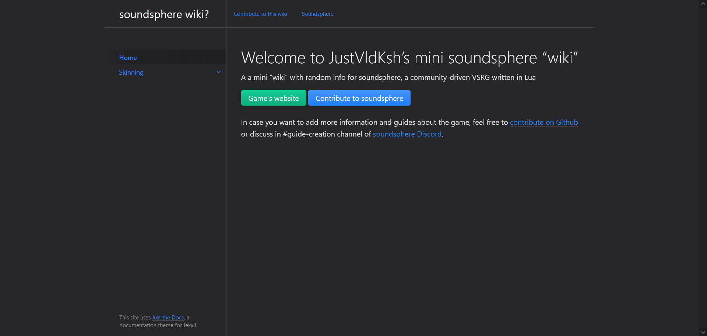

Projects
This page (justvldksh.github.io)
- Languages: HTML/CSS
- Status: Still unfinished (you can see what's broken)
- Repo link: https://github.com/justvldksh/justvldksh.github.io
My personal page, hosted on Github, nothing more lol
Made it to practice my HTML/CSS skills, feel free to complain about menu and messy code
Soundsphere VSRG Wiki?
- Languages: Markdown
- Status: Paused, outdated (lazy)
- Repo link: https://github.com/justvldksh/soundsphere-wiki
"Wiki" for an open-source community-driven VSRG written in Lua
Soundsphere: website, Github repo